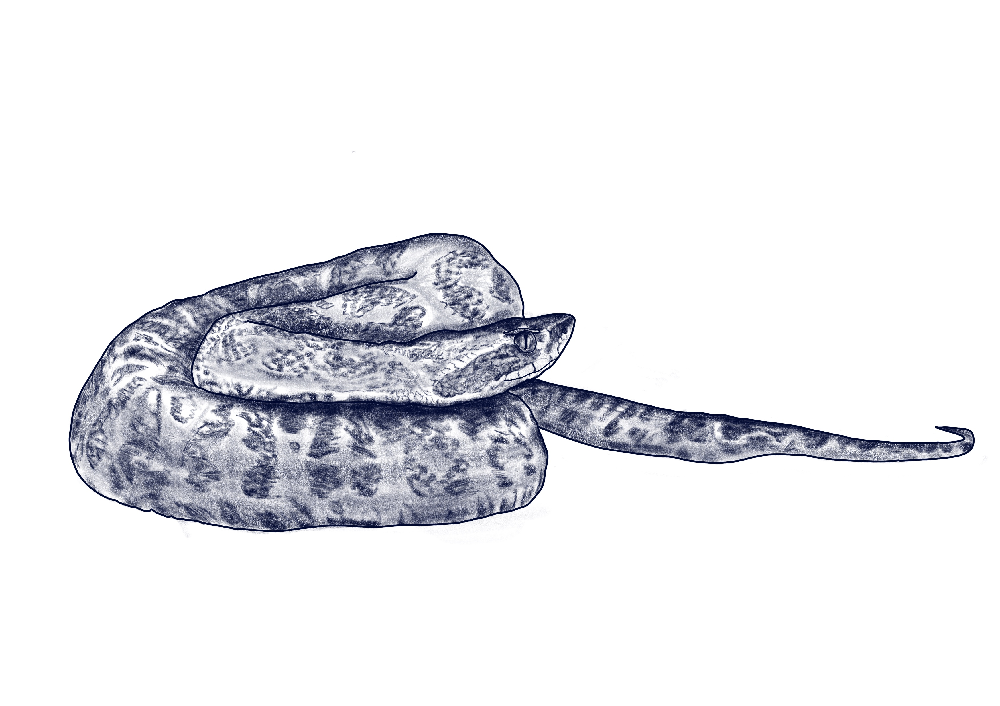

Butia odorata
Crucera

La Crucera (Bothrops alternatus) es una especie de tipo fauna perteneciente a la familia Viperidae.
Se distribuye en las zonas de pastizales, bosques húmedos y áreas rurales del sureste de Sudamérica, y es nativa de la zona de Punta del Diablo. Su estado de conservación es de preocupación menor.
Su morfología se destaca por su cuerpo robusto, de coloración marrón con manchas en forma de herradura más oscuras, y una cabeza triangular bien diferenciada del cuello.
Presenta hábitos alimentarios principalmente carnívoros, alimentándose de pequeños mamíferos, anfibios y aves, mediante un método de caza por emboscada con inyección de veneno. Se caracteriza por vivir de forma solitaria, siendo activa principalmente durante la noche.